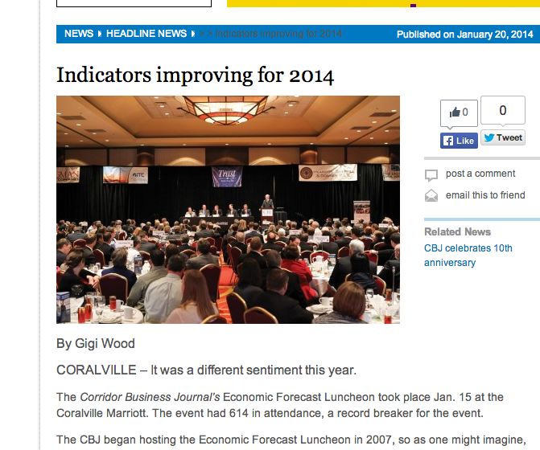

Corridor Business Journal
I worked for the Corridor Business Journal, a locally-owned, weekly business newspaper, from 2007-2014.
Clips
Business Feature
Localized Health Story
Retail Development Coverage
Leader Q&A
Entrepreneur News
TIF Scoop

A story I wrote
for the Corridor Business Journal about economic expectations for 2014.